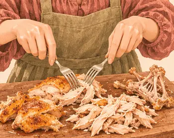
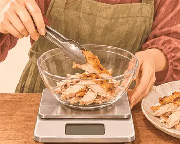
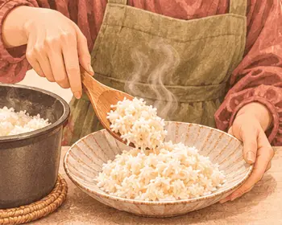
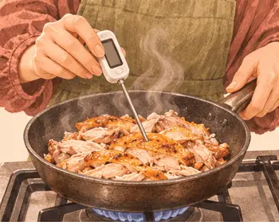
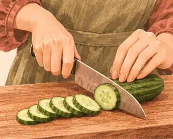
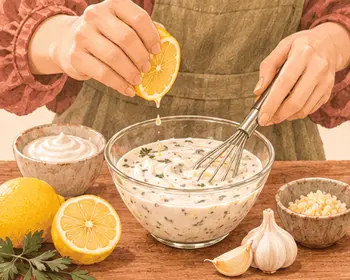

عشاء ما بعد التمرين · بعد النادي
عشاء الدجاجة المشوية مع الأرز
٥٩٥ سعرة للحصة٥–٨ دقيقة لدجاج مشوي جاهز
بروتين٤٨ غ
كربوهيدرات٤٩ غ
دهون٢٢ غ
ألياف١.٠ غ
كالسيوم١٥١ ملغ
حديد٣.٩ ملغ
بوتاسيوم٦٤٤ ملغ
فيتامين ج٧ ملغ
القيم الغذائية تقديرية للحصة الواحدة.

مكوّناتك
الوزن بالجرام · حدّد ما جهّزته
| المكوّن | حصة | ٣ حصص | ٤ حصص |
|---|---|---|---|
| ١٥٠ | ٤٥٠ | ٦٠٠ | |
| ١٤٥ | ٤٣٥ | ٥٨٠ | |
| ٨٠ | ٢٤٠ | ٣٢٠ | |
| ٥٥ | ١٦٥ | ٢٢٠ | |
| ١٠ | ٣٠ | ٤٠ |
الأدوات · لوح تقطيع، ميزان مطبخ، وعاء
خطوة صغيرة، وطبق لذيذ
يلا، نطبخها معًا.
خذ وقتك، واتبع الصور على راحتك.
الخطوة٠١
اشوِ دجاجة كاملة حسب دليل الشواء، أو اختر دجاجة مشوية جاهزة سادة.

الخطوة٠٢
افصل لحم الصدر أو الفخذ أو الساق عن العظم.

الخطوة٠٣
زِن ١٥٠ غ مع الجلد الذي ستأكله فقط.

الخطوة٠٤
ضع الأرز الدافئ في طبق.

الخطوة٠٥
إذا كان الدجاج مبرّدًا، سخّنه إلى ٧٤°م.

الخطوة٠٦
قطّع الخيار شرائح.

الخطوة٠٧
اخلط الليمون بزبادي الثوم وقدّمه باردًا.